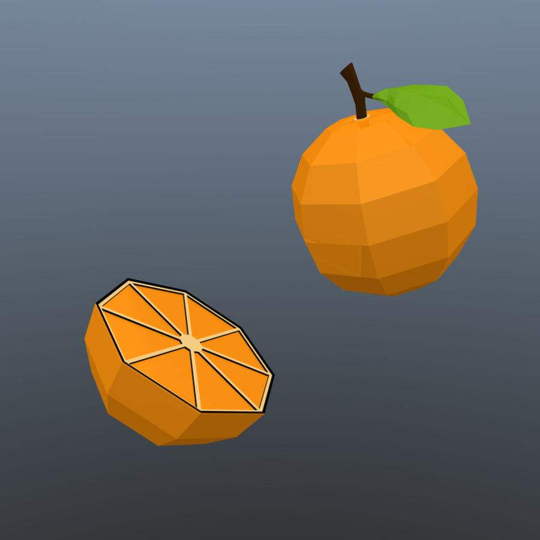

<!DOCTYPE html>
<html>
	<head>
		<meta charset="utf-8">
		<meta name="viewport" content="width=device-width,initial-scale=1,minimum-scale=1,maximum-scale=1,user-scalable=no" />
		<meta http-equiv="Pragma" content="no-cache" />
		<script src="https://cdn.bootcdn.net/ajax/libs/jquery/3.5.1/jquery.min.js"></script>
		<script src="https://cdn.bootcdn.net/ajax/libs/qrcodejs/1.0.0/qrcode.min.js"></script>
		<title></title>
		<style type="text/css">
			body,
			html,
			div,
			img,
			p {
				margin: 0;
				padding: 0;
			}

			.poster {
				width: 15rem;
				height: 22.5rem;
				position: fixed;
				top: 2rem;
				left: 50%;
				margin-left: -7.5rem;
			}

			.save_poster {
				margin-top: 0.5rem;
				text-align: center;
				font-size: 0.85rem;
				color: #333333;
			}

			.poster_img {
				display: block;
				width: 15rem;
				height: 22.5rem;
			}

			.poster_container {
				width: 100%;
				height: 100%;
				position: absolute;
				left: 0;
				top: 0;
				background: #E5E5E5;
				display: none;
			}
		</style>
	</head>
	<body>
		<script type="text/javascript">
			window.onload = function() {
				var code_model = '<div id="qrcode" style="position: fixed;opacity: 0;"></div>', //放置二维码的隐藏域
					canvas_model = '<canvas width="600" height="900" style="position: fixed;opacity:0;" id="myCanvas"></canvas>', //放置canvas的隐藏域
					poster_model =
					'<div class="poster_container"><div class="poster"><p class="save_poster">长按保存图片至手机相册</p><p style="margin-top: 0.5rem" class="aaaa"></p></div></div>';
				$("body").append(code_model, canvas_model, poster_model);
				// $(".poster").show();
				var data_base = {
					url:"https://www.baidu.com?uid=789856s",
					avatar_height:'200',
					avatar_width:'200',
					avatar:'./images/timg.jpg',
					name:'hello_canvas',
					image:"./images/456.jpg"
				}
				//生成二维码链接http://code.ciaoca.com/javascript/qrcode/
				new QRCode('qrcode', {
					text: data_base,
					width: 100,
					height: 100,
					colorDark: '#000000',
					colorLight: '#ffffff',
					correctLevel: QRCode.CorrectLevel.H
				});
				var c = document.getElementById("myCanvas"),
					cxt = c.getContext("2d");
				var img = new Image(),
					imgUrl, personName = data_base.name;
				img.crossOrigin = 'anonymous'; //跨域问题
				img.src = data_base.image;
				img.onload = function() { //图片加载为异步加载，确定加载完毕后调用drawImage()
					cxt.drawImage(img, 0, 0); //9个参数(图像地址，X轴起点，Y轴起点，原图宽，原图高，左边距，上边距，需要宽，需要高)
					cxt.save(); //剪裁问题。与restore()配合使用。剪裁后我们的canvas操作都集中在圆形区域内
					console.log("save"); //所以操作前对画布进行保存，裁剪完毕后恢复restore()
					cxt.beginPath();
					cxt.arc(100, 580, 46, 0, 2 * Math.PI, true); //http://www.runoob.com/tags/canvas-arc.html
					cxt.strokeStyle = '#fff';
					cxt.stroke();
					cxt.clip();
					var img_head = new Image();
					img_head.crossOrigin = 'anonymous'; //跨域问题
					var avatar_height = data_base.avatar_height,
						avatar_width = data_base.avatar_width;
					img_head.src = data_base.avatar;
					img_head.onload = function() {
						//可能遇到安卓端img.onload方法不调用问题，也不报错 。可能是：后台调取微信头像直接返回给前端，
						// 存在跨域问题（几遍后台请求头也处理了跨域）。可以拉回微信头像后经自己服务器处理下再返给前端
						cxt.drawImage(img_head, 0, 0, avatar_height, avatar_width, 54, 534, 92, 92);
						cxt.restore();
						var img_code = new Image();
						img_code.crossOrigin = 'anonymous';
						cxt.lineWidth = "4";
						cxt.strokeStyle = '#FFF';
						cxt.rect(460, 766, 80, 80);
						cxt.stroke();
						setTimeout(function() { //IOS端不加延迟会出问题，有人说是toDataURL问题
							img_code.src = $("#qrcode").find("img").attr("src");
							img_code.onload = function() {
								cxt.drawImage(img_code, 0, 0, 100, 100, 460, 766, 80, 80);
								cxt.font = '21px Arial';
								cxt.fillStyle = "#000";
								cxt.fillText(personName, 250, 558);
								imgUrl = c.toDataURL("image/png", 1);
								$(".poster_img").attr("src", imgUrl);
								$(".poster_container").show();
							};
						}, 100);
					};
				};
			}
		</script>
	</body>
</html>
